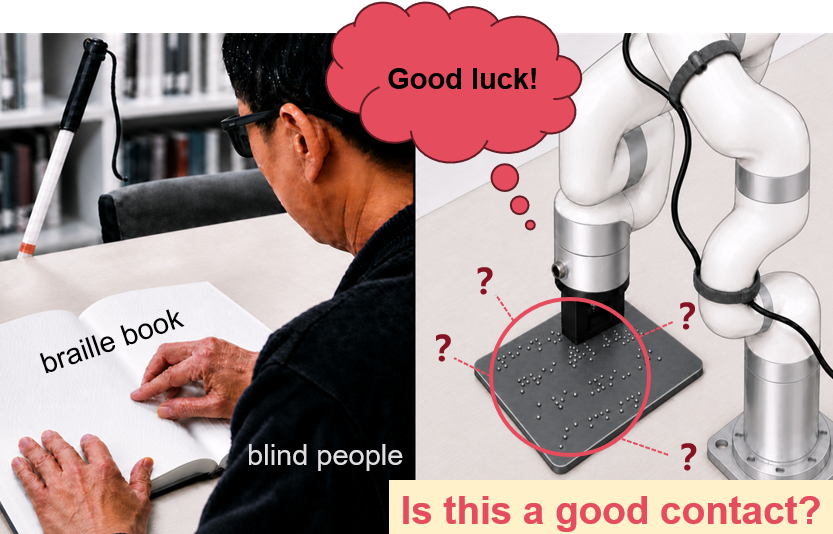
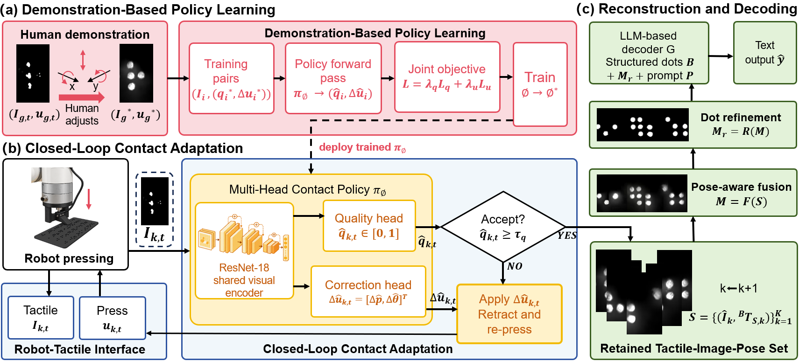
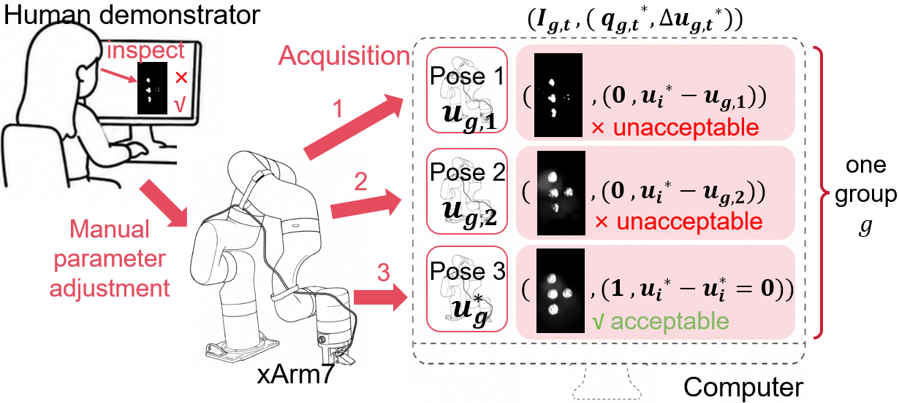
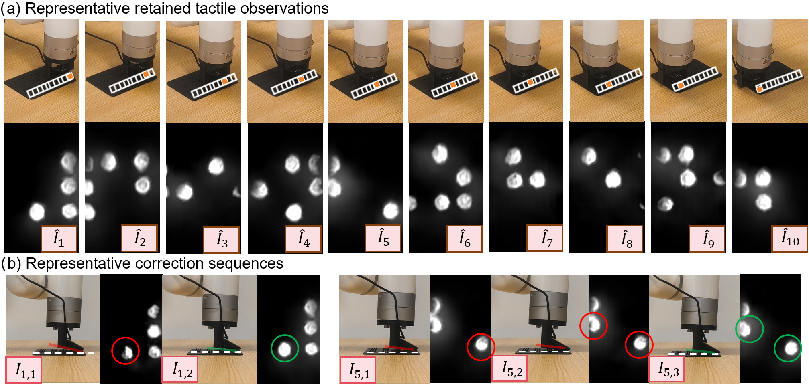

Anonymous ICRA submission · 2027
Can a Robot
Read Braille?
Learning to adapt physical contact from tactile observations before reconstructing and reading Braille.
Explore the system
Abstract
Readable touch is not guaranteed by a single press.
Robotic Braille reading requires both tactile recognition and contact that preserves Braille-dot geometry. We introduce an image-conditioned adaptive-contact framework that assesses contact quality, corrects unsuitable contact, and fuses retained tactile observations for Braille reconstruction.
System map
Demonstration → correction → reconstruction.
One closed loop connects expert-guided examples to physical re-contact and pose-aware tactile fusion.

- 01
Learn what readable contact looks like.
Grouped expert demonstrations label each tactile observation as acceptable or unsuitable, with correction targets pointing to the final accepted contact.
- 02
Assess, retract, and correct.
A multi-head policy predicts contact quality and corrections for pressing distance, roll, and pitch. The robot re-contacts only when needed.
- 03
Fuse retained tactile evidence.
Accepted tactile image–pose pairs are registered, refined into dot geometry, and organized for structured Braille decoding.
Learning signal
One demonstration group, multiple useful corrections.

Physical evaluation
94.0%
local contact success with joint position-and-orientation correction on held-out physical Braille plates.
The full strategy improves contact quality with fewer attempts than the correction baselines.
| Strategy | Attempts / loc. | Contact success | Cell accuracy (C / E / all) | Line accuracy |
|---|---|---|---|---|
| Single-press | 1.00 | 61.4% | 62.5 / 65.9 / 64.0% | 32.5% |
| Retry-only | 2.36 | 62.9% | 62.5 / 66.8 / 64.4% | 32.5% |
| Position-only | 1.84 | 81.9% | 79.6 / 80.5 / 80.0% | 60.0% |
| Full (ours) | 1.42 | 94.0% | 88.9 / 88.2 / 88.6% | 80.0% |
Closed-loop acquisition
Reject degraded tactile evidence before it contaminates reconstruction.

Platform
A tactile sensor, a robot arm, and physical Braille plates.
Evaluation uses an xArm7 robot, an optical tactile sensor, a custom adapter, and Chinese and English Braille plates. The held-out policy test reports a 92.8% contact-quality F1 with a 5.9% classification error.